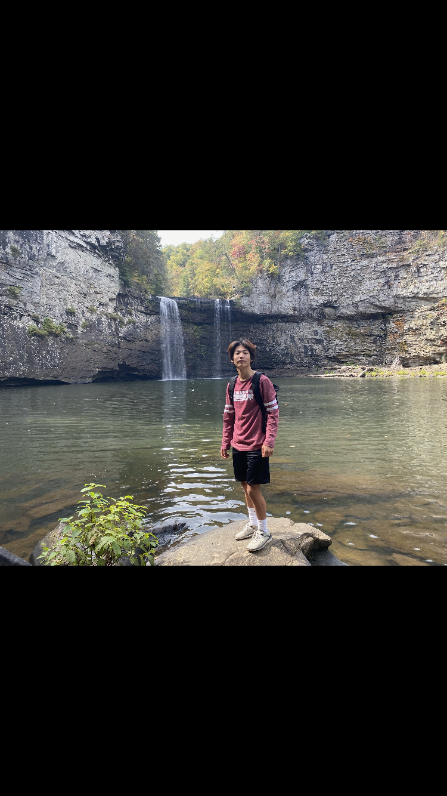

Hello, my name is John Choi. I am korean, but I am from the United States of America. This website is for you to understand the activities of Yellowstone National Park through my experience there. It is a great opportunity for others to learn what it is like there before you go so that you know what to expect. Some basic information for those who don't know, Yellowstone is a National Park, but it's not like other parks because it is spread out over 3,500 miles. You have to travel to the different locations by car. Yellowstone features dramatic canyons, alpine rivers, lush forests, hot springs and gushing geysers, including its most famous, Old Faithful. It's also home to hundreds of animal species, including bears, wolves, bison, elk and antelope. Stopping by the most interesting and famous locations are important. You can do this by traveling in a complete circle around Yellowstone to see most of the landmarks.
